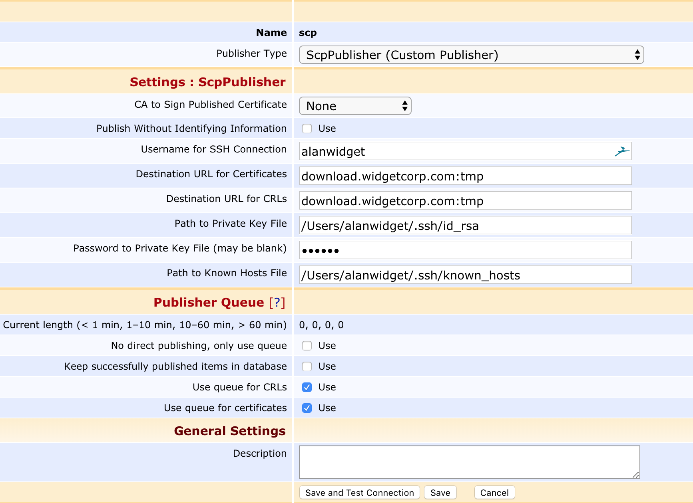

SCP Publisher
ENTERPRISE This is an EJBCA Enterprise feature.
Description
For extremely secure environments, where even the Peer Publisher (which only requires an outgoing connection through a firewall) cannot function, we provide the SCP Publisher. It publishes certificates and CRLs to a remote location over SSH, which means that they can be published from a CA server which truly has all incoming traffic cut. These certificates and CRLs can later be retrieved by a VA instance and be used for OCSP responses using a Certificate and CRL Reader Service.
Unlike the Peer Publisher, publishing will not be instantaneous. Although the CRL or certificate is written to the remote host directly after issuance, there will be a delay before the changes are picked up by the VA. The delay incurred depends on the periodic interval configured for the Certificate and CRL Service. Another aspect to take into consideration is that the CA cannot automatically query the VA in case of a broken connection.

Publisher Details
Certificates and CRLs copied to the remote host are named after their SHA1 fingerprint. Only certificates with the status CertificateConstants.CERT_REVOKED or CertificateConstants.CERT_ACTIVE are published.
The data written to the remote host is either a DER encoded CRL or a serialized org.ejbca.scp.publisher.ScpContainer object, in order to retain revocation details and other pertinent information. If a signing CA is used, the data is wrapped in a CMS envelope. The data can later be retrieved by a using a Certificate and CRL Reader Service.
Save and Test Connection
To verify the configuration, click Save and Test Connection to attempt to establish a connection to the destination server. Note that this will not write any data to the server and will hence not verify any server-side access rights.
Configuration
Configuring the SCP Publisher is as easy as using the scp command. The following parameters need to be set:
|
Parameter |
Description |
|
CA to Sign Published Certificate |
If the published certificate/CRL should be individually signed by CA before being copied to the destination. |
|
Publish Without Identifying Information |
If identifying information (such as the contents of the Subject DN, SAN, etc) should be redacted, in compliance with GDPR and other privacy regulations. |
|
Username for SSH Connection |
The username used to establish the SSH connection. |
|
Destination URL for Certificates/CRLs |
URL for the end destination of the certificate/CRL files, including directory, on the form domain.name:/path/to/folder/ |
|
Path to Private Key File |
Path to a local private key used to establish the connection. A corresponding public key should exist in the same directory with the same name and the .pub suffix. The private key file must be in PKCS#8 PEM or OpenSSH PEM format. If you generate the key using the ssh-keygen command, you must use the "-f PEM" option to generate the private key in OpenSSH PEM format (otherwise it will use RFC4716 format which is currently not supported). |
|
Password to Private Key File |
Password to the private key. The field may be left blank if the private key is not password protected. The password is encrypted in the database using the passphrase defined by password.encryption.key in cesecore.properties in order to prohibit it from being read in cleartext from a database dump. |
|
Path to Known Hosts File |
Path to the file of known hosts. EJBCA enforces host key checking for security. The known hosts-file must contain the fingerprint of the server's public RSA key. Be wary of copying an existing known hosts since they typically only contain an EdDSA or ECDSA key fingerprint. To create a working known hosts-file, use the following command: ssh-keyscan -H -t rsa,ecdsa my.server >> known_hosts |
Make sure to change the password.encryption.key in cesecore.properties from the default value.